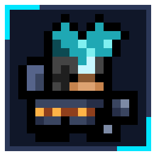
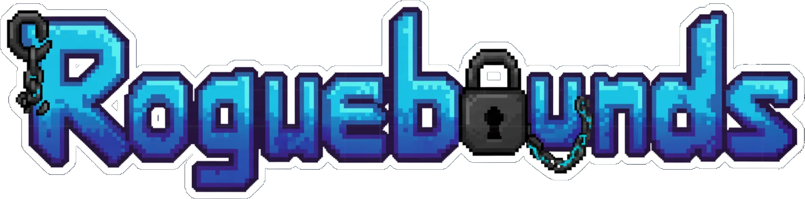
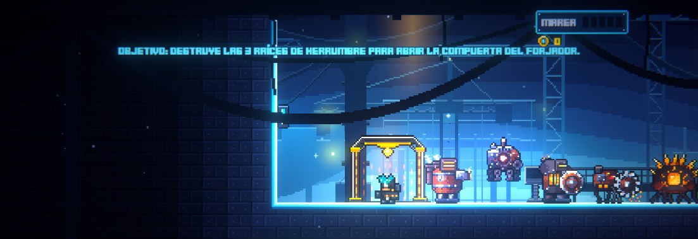
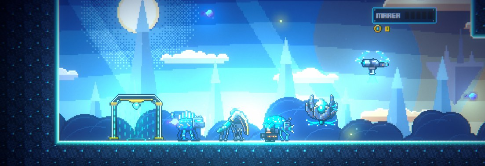
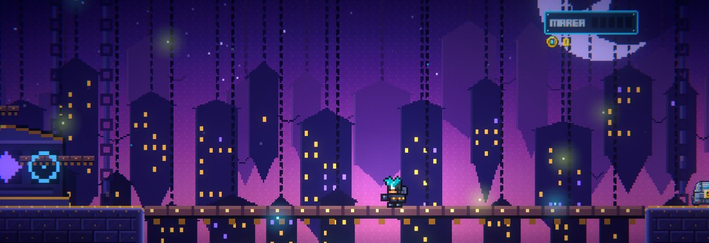

Tres mundos, cada partida distinta
Un astillero en ruinas, un huerto de cristal y una ciudad colgada sobre el abismo. Cada uno con sus enemigos, su reto y su jefe.

Roguebounds
Repara los Sellos antes de que la Herrumbre los rompa.
Acción y plataformas en 2D con alma de roguelike. Solo o con hasta tres amigos.
En desarrollo · Alpha cerrada
Arte de armas y personajes provisional: se rediseñará por completo para la beta · Más información
Eres un guardián de la Orden del Eslabón. Desde la nave bajas a mundos sellados por la Herrumbre, recoges lo que puedas, lo canalizas en energía pura y forjas con ella tu equipo para volver a bajar más fuerte.
Un astillero en ruinas, un huerto de cristal y una ciudad colgada sobre el abismo. Cada uno con sus enemigos, su reto y su jefe.
Baluarte, Filo, Rastreador o Cantor. Mazas, sables de criolita, pistolas de pulso y bastones; cualquier clase puede usar cualquier arma.
Canaliza lo que traes en orbes de energía y combínalos de tres en tres. Las recetas se descubren probando, y una forja crítica puede darte un arma mejor.
Conexión directa por IP, sin servicios de pago. Si un compañero cae, mantén pulsado para levantarlo. Cada uno recibe su propio botín.
Cada mundo tiene un nivel de corrupción. Cuanto más alto, más duros los enemigos y mejor el botín. Limpiarlo es cosa tuya.
Vence al jefe y activa el Sello para progresar, o vuelve a la nave por el pad de llegada con lo que hayas recogido.

Mundo 1 · Peligro bajo
Estructuras industriales corroídas, calderas y tuberías. Destruye las Raíces de Herrumbre para abrir la guarida de su guardián.
Jefe: El Forjador Herrumbrado

Mundo 2 · Peligro medio
Bosques de criolita bajo un cielo claro. Gira prismas y lleva la luz a sus receptores para abrir el paso al huerto.
Jefe: La Jardinera

Mundo 3 · Peligro alto
Islas y edificios suspendidos de cadenas sobre un abismo sin fondo. Toca sus tres campanas en el orden de la partitura para tender el puente al campanario.
Jefe: El Sintonizador Olvidado
Una civilización antigua descubrió la criolita, un cristal azul que guarda energía, y con ella levantó maravillas: ciudades flotantes, armas de luz, máquinas que pensaban. También descubrió, demasiado tarde, lo que la criolita atrae.
Nadie sabe si es una plaga, una criatura o una voluntad. Se alimenta de la criolita y la pudre: donde toca, el azul se vuelve ámbar, la materia se deforma y lo vivo se retuerce. Devoró mundo tras mundo.
Incapaces de destruirla, los Forjadores la encerraron: envolvieron cada mundo infectado en un Sello de cadenas de criolita y lo lanzaron a la deriva. Son los mundos errantes. Después, los Forjadores desaparecieron.
Siglos después, sus herederos fundaron una orden para mantener los Sellos. Cada guardián jura atado a un eslabón de criolita: son los Vinculados. Y los Sellos fallan más rápido de lo que la Orden puede repararlos.
«...Aquí Unidad de Enlace C-09. Solicito asistencia. Aquí Unidad de Enlace C-09...»— Señal interceptada desde Ombra
Capturas de la versión en desarrollo. Algunos sprites de armas y personajes se parecen a los de Roguelands: son provisionales y se rediseñarán por completo para la beta.
| Género | Acción y plataformas 2D · Roguelike |
|---|---|
| Estado | Alpha cerrada (en desarrollo) |
| Plataforma | Windows 10 / 11, 64 bits |
| Gráficos | Tarjeta compatible con DirectX 11 |
| Espacio en disco | Unos 200 MB |
| Modos | Un jugador · Cooperativo en línea hasta 4 jugadores |
| Red | Conexión directa por IP (puerto 7777 por defecto). Sin cuentas ni servicios de pago |
| Controles | Teclado y ratón |
| Idioma | Español |
| Motor | Unity 6 |
Roguebounds lo hace una sola persona. Si te gusta lo que ves y quieres que siga creciendo (más mundos, más jefes, más armas), puedes echar una mano con una donación. Cualquier cantidad ayuda.
♥ DonarLa alpha incluye los tres mundos, sus jefes, la forja completa y el cooperativo. Todavía es una versión de pruebas: puede haber fallos y el equilibrio cambiará.
Las inscripciones para la alpha se abrirán muy pronto. Las plazas serán limitadas.
Pedir accesoDescomprime la carpeta donde quieras y abre Roguebounds.exe. No necesita instalación. Si Windows avisa de que el programa es desconocido, pulsa «Más información» y «Ejecutar de todas formas».
Quien hospeda elige Multijugador → Hostear partida y comparte su IP. Los demás eligen Unirse a partida y la escriben con el puerto (7777). Fuera de tu red local, quien hospeda tiene que abrir ese puerto en su router.
Lo que falle, lo que no se entienda o lo que te parezca demasiado difícil o fácil. Con una captura, mejor. Así se arregla antes de la beta.